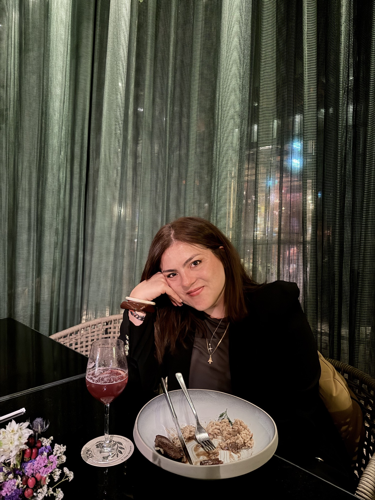
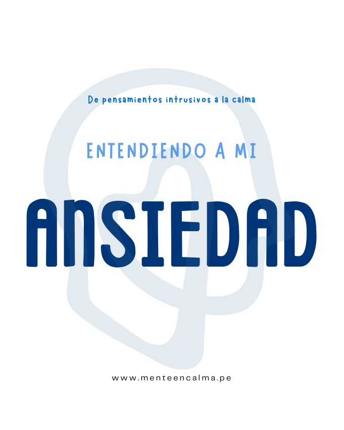

La otra cara
de la terapia.
Soy psicóloga clínica. En este diario voy compartiendo sobre mis aprendizajes, lecturas y preguntas sobre lo que nos pasa, dentro y fuera de consulta.

01 / EL DIARIO
Para eso que te está
dando vueltas.
Una lectura nos puede ayudar a poner en palabras algo que ya veníamos sintiendo.
3 lecturas disponibles.
Ya lo decidiste. ¿Por qué sigues dándole vueltas?
Una pregunta para reconocer cuándo seguir pensando deja de ayudarte a elegir.
Abrir la lecturaCuando cada meta trae otra exigencia.
¿Qué pasa si el momento de reconocer tu esfuerzo siempre queda para después?
Abrir la lecturaPuedes decir que no y aun así sentir culpa.
Una pausa para mirar qué necesitas, incluso cuando incomoda expresarlo.
Abrir la lecturaUNA PAUSA ENTRE LECTURAS
Una pregunta
para llevarte.
No hace falta responderla ahora.
¿Qué te estás exigiendo hoy que no le exigirías a alguien que quieres?
01 / 0502 / DETRÁS DE ESTE ESPACIO
Hola,
soy Magaly.
Soy psicóloga clínica y fundadora de Mente en Calma. Me interesa acercar la psicología a las conversaciones que tenemos todos los días: lo que nos preocupa, lo que nos exigimos y lo que a veces cuesta decir.
El Diario de Magaly es mi espacio de lectura y reflexión dentro de @magalyencalma. Aquí comparto ideas para mirar esas experiencias con más curiosidad y menos juicio. También la otra cara de mi profesión: aprender, crear y construir un proyecto en salud mental.

DE MENTE EN CALMA, PARA TI03 / UN RECURSO PARA TI
GRATUITO · PDF · 18 PÁGINASEntendiendo
a mi ansiedad.
Un kit de Mente en Calma con información sobre ansiedad, pensamientos y recursos psicológicos para explorar a tu ritmo.
Obtener el kit gratuitoGratis. Guárdalo y vuelve cuando lo necesites.
SI ESTÁS BUSCANDO ACOMPAÑAMIENTO
Conoce Mente en Calma
El espacio que fundé para brindar atención psicológica.
La terapia se realiza online, a través de Zoom.